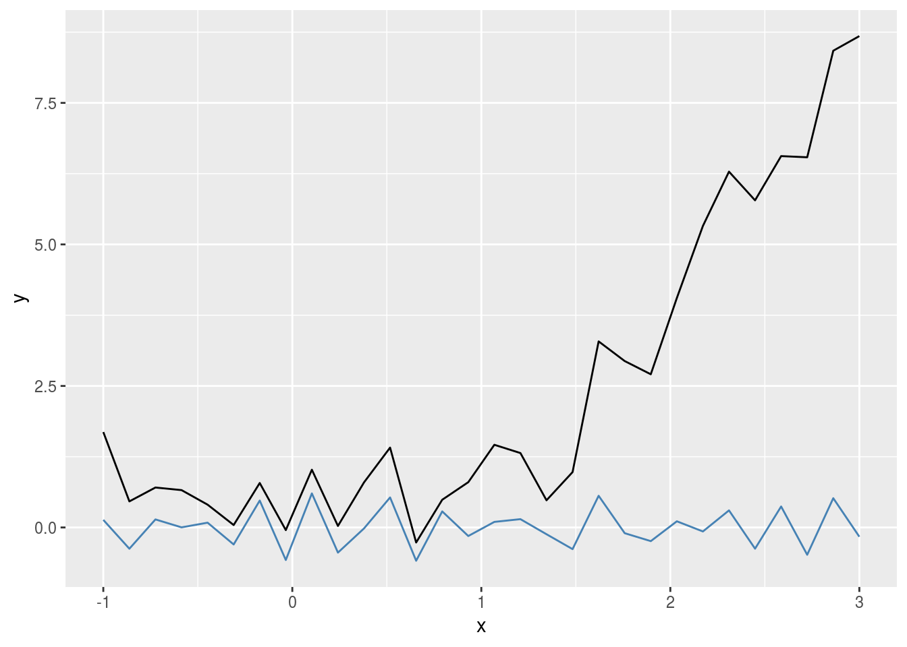
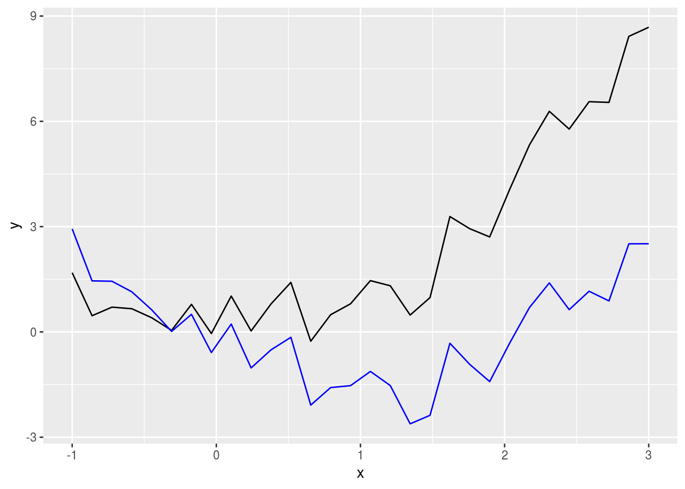
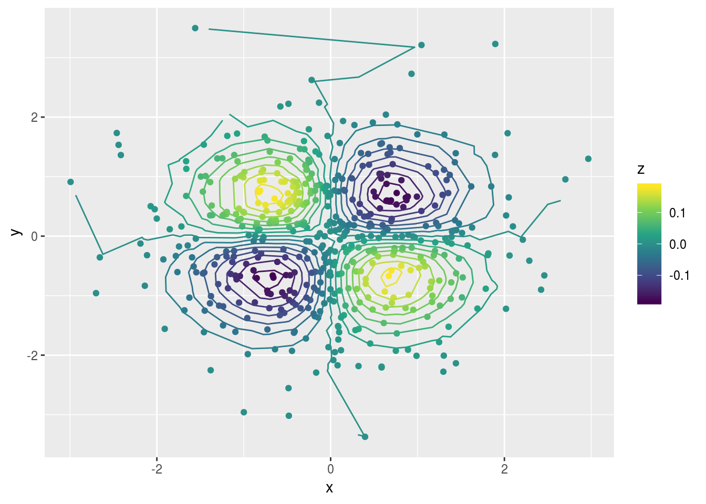

Como hacer un stat genérico en ggplot2
Hace un tiempo que venía pensando que si bien ggplot2 es genial y tiene un montón de geoms y stats, le faltaba la opción de extenderlo a stats y geoms creados por el usuario. Luego, aprendí que ggplot2 tiene un excelente sistema para extenderlo y empecé a crear mis propios stats. Pero aún así, hacer un stat específico cada vez que uno quiere hacer un plot en particular es demasiado complicado.
Entonces se me ocurrió una posible solución. Hacer un stat genérico; una tabula rasa que acepte una función creada por el usuario. Nativamente ggplot2 viene con stat_summary() que hace algo similar, pero sólo acepta funciones que (como su nombre lo indica) sumaricen los datos de alguna manera. Lo que yo quería era algo totalmente genérico y este es mi primer intento.
Debajo, es el código de stat_rasa(), que toma los datos y una función que devuelva un data.frame interpretable por el geom elegido.
# ggproto object
StatRasa <- ggplot2::ggproto("StatRasa", ggplot2::Stat,
compute_group = function(data, scales, fun, fun.args) {
# Change default arguments of the function to the
# values in fun.args
args <- formals(fun)
for (i in seq_along(fun.args)) {
if (names(fun.args[i]) %in% names(fun.args)) {
args[[names(fun.args[i])]] <- fun.args[[i]]
}
}
formals(fun) <- args
# Apply function to data
fun(data)
})
# stat function used in ggplot
stat_rasa <- function(mapping = NULL, data = NULL,
geom = "point",
position = "identity",
fun = NULL,
...,
show.legend = NA,
inherit.aes = TRUE) {
# Check arguments
if (!is.function(fun)) stop("fun must be a function")
# Pass dotted arguments to a list
fun.args <- match.call(expand.dots = FALSE)$`...`
ggplot2::layer(
data = data,
mapping = mapping,
stat = StatRasa,
geom = geom,
position = position,
show.legend = show.legend,
inherit.aes = inherit.aes,
check.aes = FALSE,
check.param = FALSE,
params = list(
fun = fun,
fun.args = fun.args,
na.rm = FALSE,
...
)
)
}Por ejemplo, si queremos rápidamente visualizar los datos menos sin la tendencia, podemos crear una función relativamente simple:
Detrend <- function(data, method = "lm", span = 0.2) {
if (method == "lm") {
data$y <- resid(lm(y ~ x, data = data))
} else {
data$y <- resid(loess(y ~ x, span = span, data = data))
}
as.data.frame(data)
}Y luego obtener los residuos en una sola línea.
library(ggplot2)
set.seed(42)
x <- seq(-1, 3, length.out = 30)
y <- x^2 + rnorm(30)*0.5
df <- data.frame(x = x, y = y)
ggplot(df, aes(x, y)) +
geom_line() +
stat_rasa(geom = "line", fun = Detrend, method = "smooth",
color = "steelblue")
Si queremos un poco más de legibilidad, podemos hacer una función con un nombre más informativo:
stat_detrend <- function(...) {
stat_rasa(fun = Detrend, ...)
}
ggplot(df, aes(x, y)) +
geom_line() +
stat_detrend(method = "lm", color = "blue", geom = "line")
Otro caso es el de calcular contornos a partir de una grilla irregular. ggplot2::stat_contour() usa grDevices::contourLines() para computar los contornos y requiere una grilla regular y el paquete contoureR tiene una función que acepta una grilla irregular. Para usarla sin problemas lo único que tenemos que hacer es armar una pequeña función y usar geom = "path" en stat_rasa()
IrregularContour <- function(data, breaks = scales::fullseq,
binwidth = NULL,
bins = 10) {
if (is.function(breaks)) {
# If no parameters set, use pretty bins to calculate binwidth
if (is.null(binwidth)) {
binwidth <- diff(range(data$z)) / bins
}
breaks <- breaks(range(data$z), binwidth)
}
cl <- contoureR::getContourLines(x = data$x, y = data$y, z = data$z,
levels = breaks)
if (length(cl) == 0) {
warning("Not possible to generate contour data", call. = FALSE)
return(data.frame())
}
cl <- cl[, 3:7]
colnames(cl) <- c("piece", "group", "x", "y", "level")
return(cl)
}
stat_contour_irregular <- function(...) {
stat_rasa(fun = IrregularContour, geom = "path", ...)
}set.seed(42)
df <- data.frame(x = rnorm(500),
y = rnorm(500))
df$z <- with(df, -x*y*exp(-x^2 - y^2))
ggplot(df, aes(x, y)) +
geom_point(aes(color = z)) +
stat_contour_irregular(aes(z = z, color = ..level..), bins = 15) +
scale_color_viridis_c()
Y voilà.
Quedan algunos detalles para mejorar, como por ejemplo la posibilidad de utilizar una función para decidir los parámetros a usar de acuerdo a los datos, pero creo que así como está sirve para el 80% de las aplicaciones simples. También debería ponerle un mejor nombre, pero nombrar cosas es muy difícil.